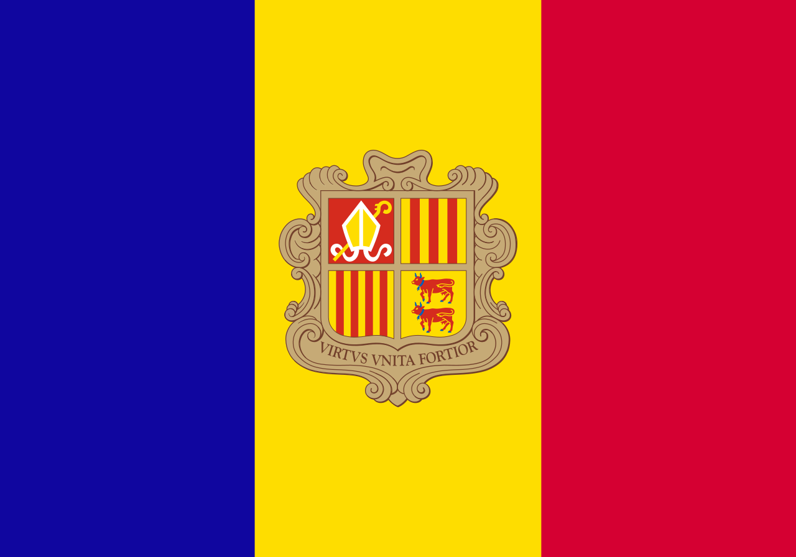

História de Andorra
A história de Andorra é rica e fascinante, marcada por uma mistura de influências devido à sua localização estratégica nos Pirineus entre a França e a Espanha.
-

Fundação: Acredita-se que Andorra tenha sido estabelecida como um território independente no final do século VIII ou início do século IX, durante o governo de Carlos Magno, o imperador franco. Segundo a lenda, Carlos Magno teria concedido o território de Andorra aos habitantes locais como recompensa por sua ajuda na defesa contra os mouros.
-

Domínio Conjunto: Desde então, Andorra tem sido um co-principado, com dois governantes: o Bispo de Urgel, na Espanha, e o Conde de Foix, na França. Esse sistema de governo conjunto é uma característica única da história de Andorra. No entanto, em 1993, o tratado de Bayonne concedeu poderes ao Bispo de Urgel e ao Presidente da República Francesa sobre questões internas do país.
-

Século XX: No século XX, Andorra começou a se modernizar e abrir-se ao mundo. Em 1958, uma nova Constituição foi promulgada, estabelecendo o Principado de Andorra como uma democracia parlamentar.
-

Século XXI: Nos anos 2000, Andorra passou por uma série de reformas legais e financeiras para se tornar mais transparente em questões financeiras e fiscais, atraindo investidores estrangeiros.